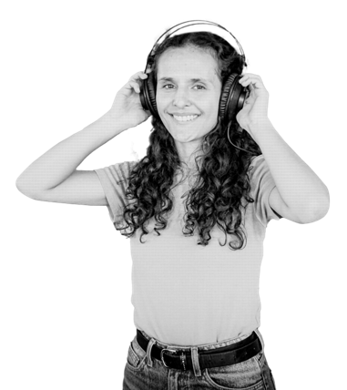

5.1 Cultural and artistic practices — young people in Bogotá
Source: Biennial Culture Survey 2025 – Secretariat of Culture, Recreation and Sport
Cut-off 2025, young people aged 13-28
–
of young people currently practise a cultural, artistic or creative activity
Do you currently practise any cultural, artistic or creative activity? · Answer Yes

Cultural practice by type of activity
In the last 12 months, which of these activities did you practise with some frequency?
Attendance at cultural venues and activities
In the last 12 months, did you attend at least once...?
Satisfaction with the city’s cultural offer
How satisfied are you with the cultural and artistic activities that city agencies organise in your locality? (scale 1 Not at all – 4 Very satisfied)
5.2 Recreation and sport — young people in Bogotá
Source: Sports Practice and Quality of Life Survey 2024 (module of the Biennial Culture Survey)
Cut-off December 2024
–
of young people currently practise a sport
Do you currently practise a sport? · Answer Yes
Main place for physical activity
Where do you mainly do physical activity?
Attitudes to physical activity
Which of these statements is closest to your current situation?
Main reason for not practising a sport
Base, only young people who said they do not currently practise a sport.
Satisfaction with the city’s sports and recreation offer
How satisfied are you with the sports and recreational activities that city agencies organise in your locality? (scale 1 Not at all – 4 Very satisfied)